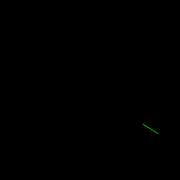
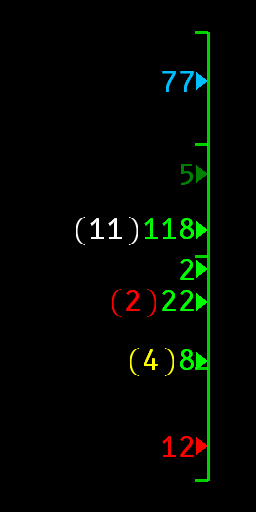

Viento
Dirección respecto al coche; la longitud del segmento representa la magnitud.
Alfa privada · OpenXR
Visor de Carrera
Un instrumento de información situacional para carreras, diseñado para VR y para presentar un conjunto reducido de indicaciones sin llenar la vista frontal.


Tesis de producto
VICA no es un panel de datos. Cada elemento tiene un propósito, una regla de visibilidad y un comportamiento ante datos desactualizados. Si faltan datos, están desactualizados o son inciertos, la indicación se oculta.
Elementos de visualización
Dirección respecto al coche; la longitud del segmento representa la magnitud.
Un contador compacto xN de incidentes de la sesión.
La velocidad mínima registrada durante la última deceleración significativa, pensada para práctica y clasificación.
Contexto experimental de coches cercanos en una escala vertical de ±2 segundos. Los marcadores se ocultan cuando sus datos de posición están desactualizados.
Control del piloto
Las indicaciones OpenXR son opcionales. Valida los cambios en una sesión controlada, conoce la forma de desactivar VICA antes de conducir y desactívalo si afecta a la visibilidad, la atención o el rendimiento.
Estado
VICA se valida mediante pruebas controladas y opcionales. El manual y la página de seguridad documentan la postura pública actual sin afirmar soporte amplio de simuladores ni aprobación para carreras.